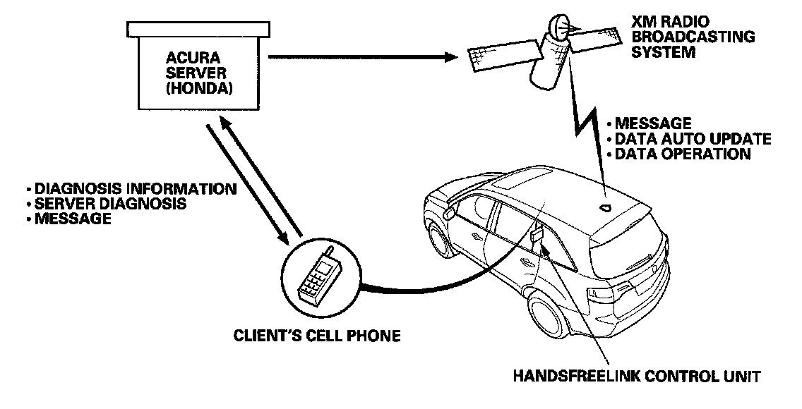

AcuraLink
AcuraLinkSystem Description
The AcuraLink uses the client's cell phone or XM radio to transmit and receive information about the vehicle. In addition, the AcuraLink system has a Text-To-Speech engine, and will also have the capability to initiate voice or data calls with the HandsFreeLink control unit.

The AcuraLink control unit (HIP) is very similar in design to an XM receiver that has additional communication features. The main functions include:
- Receiving and playing XM stations. Displaying station, song title and other information on the audio unit using the GA-Net bus.
- Receiving XM traffic channel data.
- Gives "Feature Guide" tips.
- Receiving AcuraLink messages and displaying then in the navigation display.
- Processing DTC (diagnostic trouble code) error messages from the PCM, the SRS and other systems and displaying them on the navigation display.
- Sending DTC information to the AcuraLink servers using the client's cell phone (only if client has set up and enabled this option).
Service Application
- Malfunction indicator lamp (MIL) explanation (from server message and vehicle message)
- Service information message
- Recall Information
- Quick tips
- Place to provide feedback/view cautions that were not available when vehicle was initially sold
- Correction of address and full name that is registered
- Real time traffic information
- Maintenance information message
- Feature guide (90 days)